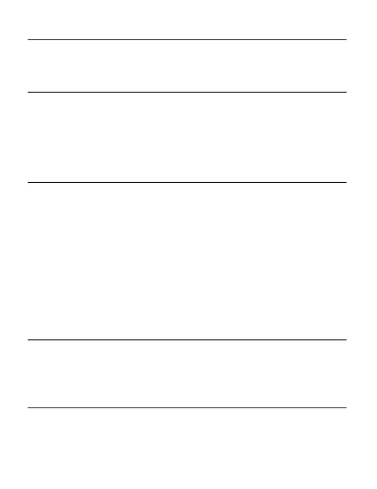

Tanaka Chingonzo
EDUCATION
The College of Wooster
Graduating in June 2021
BA, Computer Science & Sociology Double Major
GPA 3.3/4.0
Scholar, Watson Institute
June 2016
Certificate in Entrepreneurship
PROJECTS
Apply Africa Twitter Bot and Website
May 2018
● Built website with HTML, CSS and JavaScript. Self-taught CPANEL and Networks database administration.
● Configured Mailchimp, YOAST SEO, Facebook and Google Analytics to sign on 1500+ active student
subscribers in 4 months.
● Developed a Twitter bot for the website in Python that tweets opportunities for students from JSON files.
SMS Notification Web App Using Twilio API
Dec 2017
● Programmed a web notification plugin for the Apply Africa website in Python that accessed the Twilio API
to send out an SMS to a database of registered users when there was a new post.
● Increased returning visitors by 7,218% in one month to 2700 weekly visitors.
WORKING EXPERIENCE
Twitter #Early Bird Program for Freshman 2018, Participant
May 2018
● Selected as one of 30 students out of 2000+ freshman applicants to attend a five-day immersion program at
Twitter for first-year CS majors focused on professional and technical development, coding, networking,
personal branding, and interview skills.
● Built a feature for Twitter with a team of 6 to create and populate a user page with a person’s most frequently
used keywords based on their tweets. Used HTML, CSS, JavaScript to create a demo page for the feature.
College of Wooster NSF Physics REU, Research Assistant
May 2018
● Developed a web-based JavaScript timeline of the Belousov-Zhabotinsky chemical reaction using timeline.js
and neatline.js JavaScript frameworks.
● Contributed to open-source Timeglider.js Javascript framework on GitHub which can be used to create
interactive, zoomable and scrollable timelines on websites..
● Used Latex and Omeka to build the BZ History project.
American Embassy in Zimbabwe, Intern
Aug 2016
● Organized college fairs and events for 30+ US colleges, registering 120+ student members and offering
college application and career advice to 120+ Zimbabwean students.
Spark Boulder, Associate Intern,
Jan 2016
● Automated customer on-boarding with Zapier and IFTT. Increased new user sign-ups by 2 times.
TECHNICAL SKILLS & COURSES
Programming languages
Courses
Novice: C
Introduction to Digital Humanities
Intermediate: HTML, CSS, JavaScript
Data Structures and Algorithms
Python
Imperative Problem Solving
Git
Scientific Computing
Technologies: Linux, Markdown, Jekyll, Ruby, Visual Basic
Languages: English (native), Shona (native), Ndebele (fluent), Kalanga (proficient), Xhosa (elementary)
ADDITIONAL SKILLS & AWARDS
Undergraduate Network for Research in the Humanities Conference, Steering Committee
Apr 2018
Cleveland Global Shapers, Global Shaper
Aug 2017
College of Wooster, Resident Assistant & Student Government Senator
Aug 2018